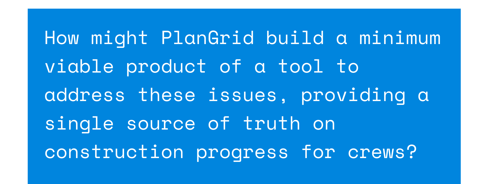
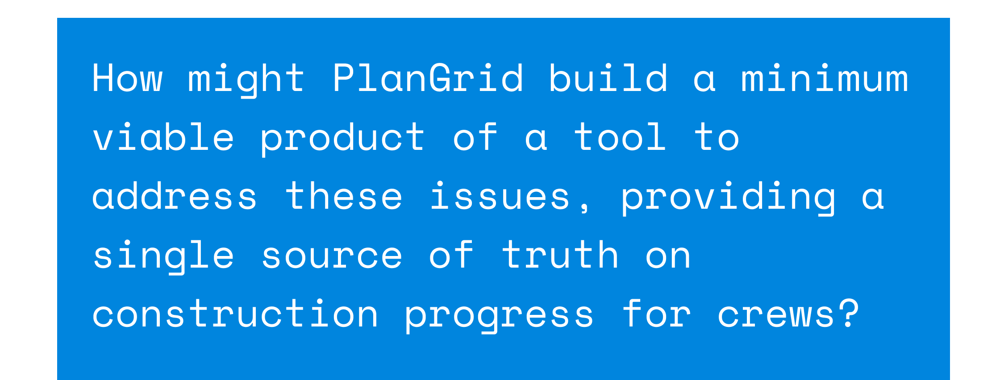
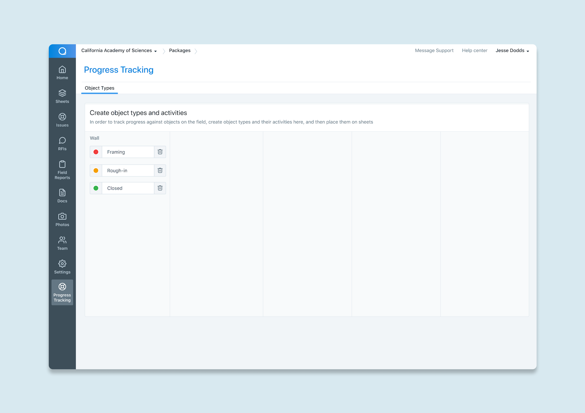
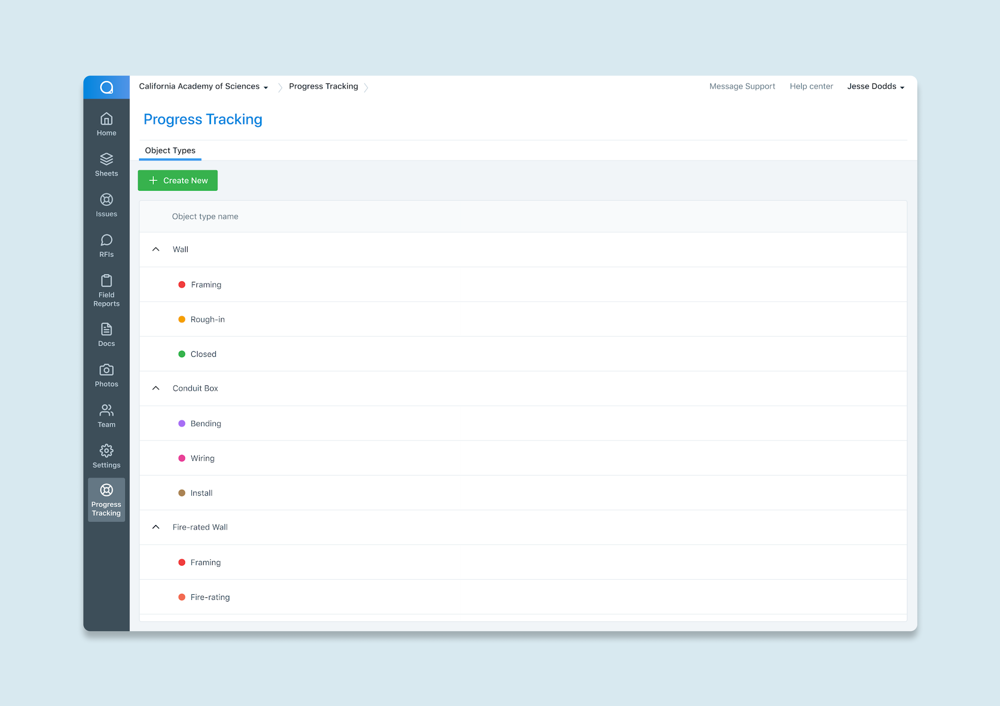

PlanGrid Progress Tracking
In the fall of 2019 (September - December), I had the opportunity to work at PlanGrid in San Francisco. PlanGrid builds field productivity and project management
software for the construction industry. In 2019, PlanGrid was acquired by Autodesk. During my time at PlanGrid,
I was working on the Progress Tracking team, designing experiences to provide a single source of truth for the state of production on construction projects.
Role: Product Design Intern Timeline: Fall 2019 Tools: Figma, Whimsical
Role: Product Design Intern Timeline: Fall 2019 Tools: Figma, Whimsical
Identifying the problem
Construction companies don’t always meet their estimated budgets and timelines. Usually
they realize this far too late to make any necessary adjustments. This leads to lost money
and wasted work. Current methods of tracking progress are inefficient, disjointed, and do not
keep crews accountable.


Understanding existing workflows
I joined the team near the tail-end end of the initial research and discovery phase. Through said research, the team found that many of these current methods rely on gut
estimates while on the construction site, usually performed by the foreman, then reported to the project manager. This method relies heavily on personal experience, and is generally low accuracy.
As mentioned above, low accuracy methods result in skewed views of total progress, thus leading to lost money and wasted work. On the other end of the spectrum, we found methods of progress tracking that were very detailed and high accuracy. However, all of these methods required significant amounts of set-up and configuration by project managers, and were not mobile-friendly for field use.
The latter point leads to low adoption by most companies (in terms of these higher accuracy methods).
Interestingly enough, in the middle of the spectrum, there were methods in which companies would leverage pre-existing markup tools in PlanGrid to annotate sheets with visual representations of objects to track progress on. Updating the progress on these “objects” on the field would be as easy as changing their colors. Unfortunately, this method doesn’t translate well to high accuracy data (which would then be used to calculate productivity rates and make appropriate adjustments). Despite that, seeing users employ this workflow presented great inspiration and an exciting opportunity for us.
Interestingly enough, in the middle of the spectrum, there were methods in which companies would leverage pre-existing markup tools in PlanGrid to annotate sheets with visual representations of objects to track progress on. Updating the progress on these “objects” on the field would be as easy as changing their colors. Unfortunately, this method doesn’t translate well to high accuracy data (which would then be used to calculate productivity rates and make appropriate adjustments). Despite that, seeing users employ this workflow presented great inspiration and an exciting opportunity for us.
Existing methods of tracking progress
Defining requirements
Having discovered all of these methods, we found that our solution had to:
- Provide a simple-to-use, mobile friendly, visual representation of objects to track progress on.
- Be quick and efficient for project managers to set up objects, and assign their associated activities (ie. create a “Wall” object type with associated activities “Framing”, “Rough-In”, “Closing”).
- Generate detailed and high accuracy data, which could be leveraged to calculate productivity rates and provide a single source of truth for each construction project.

Established product vision; this case study focuses on the configuration
Sketching it out
After gathering the above requirements, our team began brainstorming different methods to meet them. I facilitated a two-part idea generation workshop (specifically for the “configuration” portion of the product) in which the cross-functional team (including product, design, user research, and engineering) all gathered together to sketch ideas.
This was particularly helpful as it brought together many different perspectives and pieces of knowledge I would have otherwise been unaware of.
From there, alongside my product manager, we filtered down and expanded on a couple of key ideas, selecting the ones that were the most aligned with our given problem space and limitations. We were able to solidify requirements, make key design decisions, and iterate quickly. Sketches of multiple design options on pen and paper became low fidelity wireframes.
At this phase, I created a user flow diagram to get a better sense of how the requirements for configuration would be perceived by the user. Through this, I was able to get a lot of early feedback, better informing later design iterations.
Facilitating a sketching session for brainstorming
From there, alongside my product manager, we filtered down and expanded on a couple of key ideas, selecting the ones that were the most aligned with our given problem space and limitations. We were able to solidify requirements, make key design decisions, and iterate quickly. Sketches of multiple design options on pen and paper became low fidelity wireframes.
The result of the session: a lot of sketches
At this phase, I created a user flow diagram to get a better sense of how the requirements for configuration would be perceived by the user. Through this, I was able to get a lot of early feedback, better informing later design iterations.

User flow for configuration based on ideas
Design Considerations
After a few more rounds of iteration, I arrived at three main options for the first portion of configuration, setting up a construction project’s objects and activities. To be clear on explaining the three options, we must first clearly define objects and activities. At a high level, objects (such as walls) are items on the construction site to be worked on, while activities specify the particular tasks that need to be performed in order to track progress. Similar to the methods
PlanGrid customers were using existing markups capabilities for, activities are assigned specific colours in order to clearly represent progress on a sheet visually.

Understanding the relationship between objects and activities is critical to selecting the ideal option for setting up a project’s objects and activities. Below were the three options created and details regarding their strengths and weaknesses:
Diagram illustrating the object-activity relationship
Understanding the relationship between objects and activities is critical to selecting the ideal option for setting up a project’s objects and activities. Below were the three options created and details regarding their strengths and weaknesses:
Option 1
Strengths
- Familiar/modern layout (Kanban style)
- Clear display of all objects and activities
- Efficient to add/change activities and objects in-line
- The Kanban mental model does not inherently have a one-to-one correspondence with objects and activities
- Takes up a lot of screen space, low information density
Option 2
Strengths
- Very clear visual separation of separate objects
- Intuitive navigation pattern, similar to iPadOS settings
- New component within the app (not in the design system)
- Takes up a lot of screen space, low information density
Option 3
We chose Option 3 as it best aligned with our development timeframe for a minimum viable product. It was also future-proof and familiar for existing PlanGrid users.
Strengths
- Existing component within app (faster to build)
- Aligns with existing mental models from PlanGrid
- Future-proof by providing empty space for upcoming content
- Currently visually sparse (see last pro above)
- Less clear distinction between activities and objects
Testing with customers
After establishing the layout, the process of creating and editing objects and activities needed to be designed.
To do this, I drew inspiration from two separate pieces of software, resulting in two more options with distinct approaches to user experience. One approach (left) was based upon existing PlanGrid creation patterns, including many modals and side drawers for editing.
The other approach followed design patterns (such as in-line editing and autosave) found in modern productivity apps like Todoist and Asana (right).
“Classic” PlanGrid Drawer Edit Approach
In-Line Edit Approach (similar to Asana)
I worked with the user researcher on my team to conduct 5 usability tests on these two different approaches. Through conducting the five user tests, we found that our customers enjoyed the new efficiency and ease of use provided by the modern approach, while others felt “safer” and more familiar with the current PlanGrid patterns.
In addition, said user testing qualitatively validated the practicality of our solution, as some customers deemed it a “game changer” for their construction teams. As such, our final solution incorporated elements of both approaches, combining the use of in-line editing with the familiar side-drawer. Using these mock-ups, I worked with our front-end engineers to build out and implement the designs.
Final Designs
Implemented final designs
Next steps and reflections
There's a lot in store for Progress Tracking, considering that this project was only a proof-of-concept. Once more testing is done, more questions answered, and more hypotheses validated,
the initiative will continue to be iterated upon and fleshed out. An exciting development for the near future is the release of Autodesk Build,
the unified construction platform for Autodesk, combining the best parts of PlanGrid and BIM360 (Autodesk's existing construction software platform). As this initiative is released, there will need to be consideration on how this initiative will
utilize the design system, both in terms of visuals and interactions.
I had an assumption that the in-line editing approach would be the ideal solution for its perceived efficiency. However, through user testing we found that familiarity was an equally important factor to users. This taught me the importance of testing and research-based decision making. Due to the nature of the project being an MVP, there was less of an emphasis on ironing out the visuals, though this is an area that I am looking to grow in and receive feedback for.
I had an assumption that the in-line editing approach would be the ideal solution for its perceived efficiency. However, through user testing we found that familiarity was an equally important factor to users. This taught me the importance of testing and research-based decision making. Due to the nature of the project being an MVP, there was less of an emphasis on ironing out the visuals, though this is an area that I am looking to grow in and receive feedback for.
literatura app →